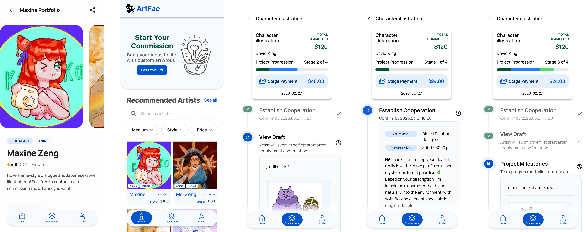
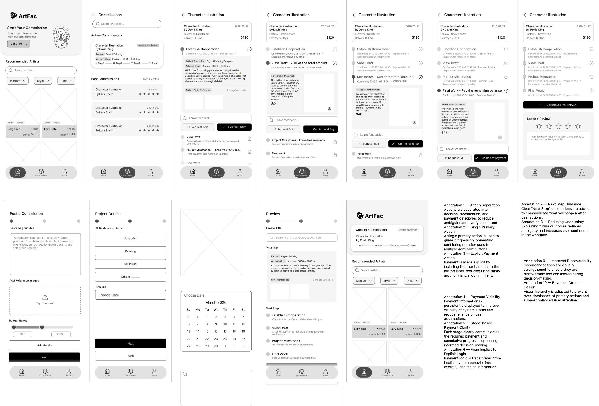
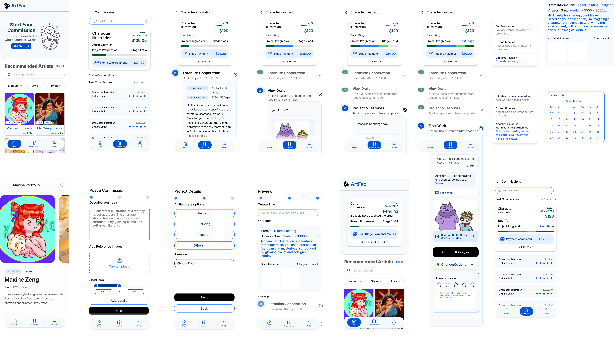
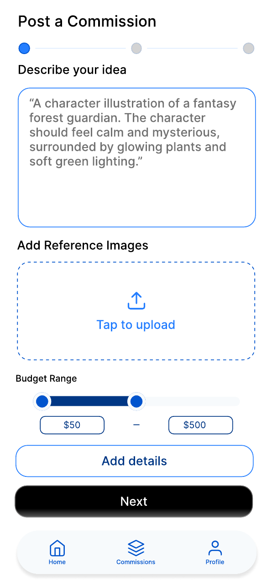
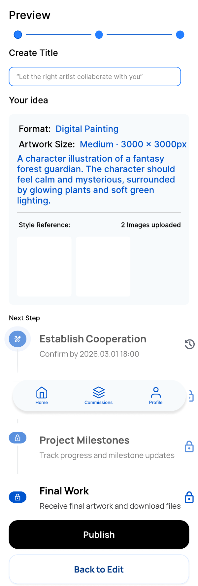
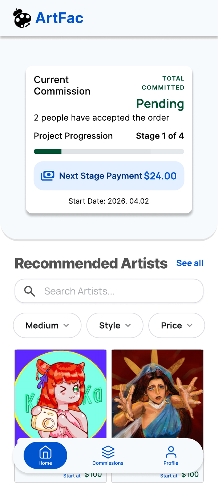
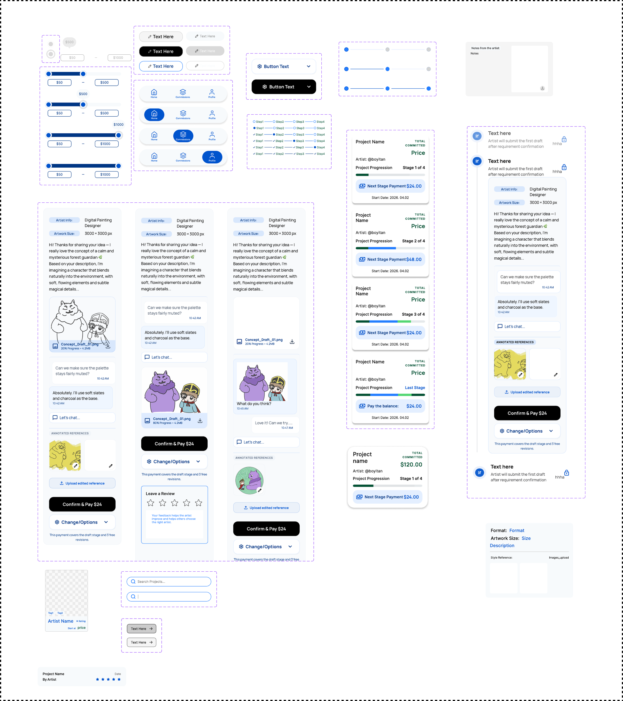
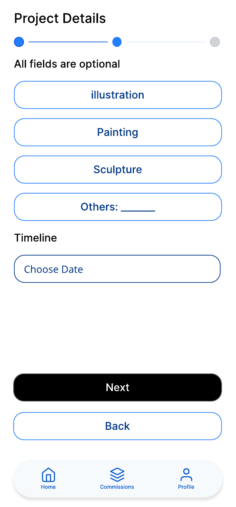
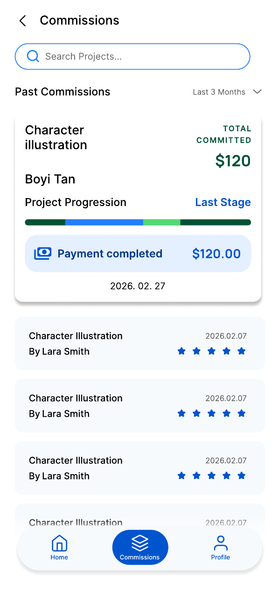

ArtFac — Designing trust in custom artwork commissions
ArtFac redesigns the custom artwork commission process into a clearer workflow, helping clients and artists see what was requested, what was agreed, what stage the project is in, and when payment or revision actions are expected.
ROLE
UX Designer / UI Designer
Group mid-fi concept co-designed; individual high-fidelity refinement by Boyi, focusing on UI components, interaction states, and milestone-based commission flow.
TIMELINE
2026.02 - 2026.04 · 8 weeks
Term likely Winter 2026; source-confirmed duration is February-April 2026.
TEAM
Group project foundation
Collaborative mid-fi concept; individual high-fidelity Figma refinement. Exact team size not confirmed.
SCOPE
Research · flows · mid-fi · hi-fi prototype
User flow, task flow, screen flow, IA, design system, testing script, high-fidelity Figma prototype, and moderated / think-aloud usability testing with 5 participants, including 3 interviews conducted by Boyi.

ROLL SCENE 01 · ARTFAC
TRY THE PROTOTYPE
Click through the ArtFac mobile flow
Use the embedded Figma prototype to test the client-side journey from artist discovery to commission creation and project tracking.
FLOW FOCUS
Artist discoveryCommission creationProject tracking
Embedded from Figma prototype node 8:2387. If the frame does not load, confirm the Figma sharing permission is set to viewable.
COLD OPENTC 00:00
PROBLEM
Money between strangers is awkward, especially when the artwork does not exist yet. Clients are asked to commit before they can see the final result, while artists are asked to protect their time before the relationship feels secure.
[[FILL: add one real pain point from user testing, class critique, or project notes]]
DIRECTION
How might the interface make request details, payment timing, revision boundaries, and delivery status visible before confusion turns into conflict? How might both clients and artists know what is expected next during a commission?
CHALLENGE
Two users enter the same transaction with different risks: clients need clarity before paying, while artists need clear briefs, payment confidence, and boundaries around revisions.
[[FILL: add the most important tension you found between client needs and artist needs]]
SOLUTION
The redesign aimed to make trust part of the workflow: guided request creation, shared project status, milestone-based payment, clearer revision moments, and visible delivery expectations.
The group mid-fi prototype established the core commission journey. My individual redesign focused on improving payment visibility, workflow transparency, interaction clarity, and the final mobile UI system. [[FILL: refine this based on your exact contribution]]

SHOT 0A · WIREFRAMES
Problem flow snapshot — request details, project setup, milestone payment, draft review, revision, and delivery.

SHOT 0B · FULL FLOW
Full mobile flow board showing discovery, commission creation, payment stages, revision decisions, delivery, and review states.
THE CASTTC 00:41
ARTIST ASSUMPTION
Artist / CreatorTHE ARTIST SIDE
Design assumption: artists need enough detail to price the work, protect their time, and avoid repeated negotiation after the commission starts. [[FILL: replace with real quote or keep as assumption]]
Needs: Clear request details before accepting work Payment confidence and visible stage expectations Revision boundaries that reduce repeated communication [[FILL: adjust if artist interviews provide stronger evidence]]
CLIENT SIDE
Client / CommissionerTHE CLIENT SIDE
The client side needs confidence before paying: what to ask for, where the commission is in the process, and how to request edits without starting an awkward conversation. [[FILL: replace with real quote if available]]
Needs: Understand what details the artist needs Know the current project stage and next action Understand payment timing and revision options [[FILL: adjust based on testing task notes]]
HIGHLIGHTS — THE PAYOFF, UP FRONTTC 01:10
The final design should be read as a set of UX decisions, not product marketing. Each highlight explains the design problem, the decision, why it matters, and where real evidence still needs to be added.
HL 01
Request clarity before agreement
Design problem: vague DM-style negotiation makes it hard for clients to explain a creative idea and hard for artists to evaluate scope. Design decision: structure the request around description, references, budget range, and preview before submission. Why it matters: the brief becomes something both sides can review before agreement.
[[FILL: list the actual request fields shown in the final UI and explain whether they came from group mid-fi, individual redesign, or both]]
Evidence to add: [[FILL: observation, critique, testing note, or design assumption that led to structured request creation]]

HL 01 · REQUEST
Use this shot to explain how structured fields replace vague DM-style negotiation.

HL 02 · PROGRESS
Payment is shown as part of the project stage, not as an isolated checkout moment.
HL 02
Shared project status
Design problem: once a commission starts, uncertainty shifts from "Can I trust this artist?" to "What is happening now?" Design decision: use My Commission, Project Details, and progress tracking to keep the current stage, next step, and project state visible. Why it matters: status becomes a shared reference point instead of a private guess.
[[FILL: describe exact status labels, progress indicators, project cards, or milestone elements in the UI]]
Evidence to add: [[FILL: peer critique, testing note, or design assumption about uncertainty during project progress]]
HL 03
Boundaries for payment, revisions, and delivery
Design problem: payment, revision, and delivery are the moments where collaboration can become uncomfortable. Design decision: connect payment summary, Request Edit, draft review, and final delivery to visible project stages. Why it matters: users can see what they are approving, paying for, or sending back for changes.
[[FILL: confirm final payment structure, whether revision limits are visible, and which UI elements you redesigned]]
Evidence to add: [[FILL: observation, critique, testing note, or assumption about scope creep, payment discomfort, or delivery risk]]

HL 03 · TRUST SIGNALS
Recommended artists and commission context make trust signals visible before commitment.
ACT I — OBSERVETC 02:04
I treated the early phase as a way to understand where trust breaks in art commissions. This was not final proof; it was a working map built from competitor analysis, peer critique, instructor feedback, project assumptions, and moderated / think-aloud usability testing with 5 participants.
[[FILL: number]]
platforms or flows audited
5
testing participants; 3 interviews conducted by Boyi
[[FILL: number]]
major redesign themes identified
INSIGHT 01 — TRUST BREAKS BEFORE DELIVERY
Clients do not only worry at the final payment screen. The uncertainty can start earlier, when they cannot tell what is happening, what is expected next, or whether silence is normal. [[FILL: connect this to one real testing note, critique, or project observation]]
INSIGHT 02 — ARTISTS NEED BOUNDARIES, NOT ONLY EXPOSURE
For artists, the product problem is not only exposure. It is also protecting creative labor: understanding the brief, setting scope, making payment feel normal, and avoiding endless revision loops. [[FILL: mark this as real finding or design assumption]]
A marketplace profile can create first-contact trust, but a commission needs ongoing trust after the request is accepted. Status, milestones, and check-ins turn the relationship into a visible process. [[FILL: add source or keep as design rationale]]
SHOT 1A — [[FILL: describe the research artifact and what it helped you decide]]
ACT II — MAPTC 03:20
Trust is not one screen. It is a sequence of small confirmations: what was requested, what was agreed, what stage the work is in, what can be revised, and what happens at delivery.

ACT II · UI OVERVIEW
Use this overview as the visual map of the commission lifecycle. Add notes later if you want to separate group mid-fi from individual hi-fi work.
THE COMMISSION FLOW — THREE TAKES
Take 01
Early group direction
[[SCREENSHOT NEEDED: early flow / IA / sketch]]
TAKE 01 — GROUP IDEA / EARLY FLOW
The early direction explored how clients could discover artists, describe a commission, and move into an agreement. [[FILL: describe what the first flow focused on and what was still missing]]
→

TAKE 02
TAKE 02 — GROUP MID-FI
The group mid-fi prototype established the core commission journey and introduced milestone-based collaboration. However, critique and testing suggested that payment visibility, workflow transparency, and action hierarchy needed to be clarified. [[FILL: specify which screens were included and what evidence supports the critique]]
→

FINAL CUT
FINAL CUT — INDIVIDUAL LOW-FI TO HI-FI REDESIGN
My individual high-fidelity refinement focused on UI components, interaction states, and the milestone-based commission flow: stronger hierarchy, clearer milestone payment, visible project tracking, and more structured feedback actions.
ACT III — RESOLVETC 04:35
RESHOOTS — WHAT FEEDBACK CHANGED
This section should show feedback-driven redesign, not a polished final claim. Focus the before/after story on payment visibility, progress tracking, and revision workflow. [[FILL: summarize the most important feedback sources: class critique, peer feedback, instructor feedback, or usability testing]]
Before · Payment visibility
Payment existed, but context was weak
[[SCREENSHOT NEEDED: before payment/progress screen]]
BEFORE — Payment was present, but it was not strongly connected to project stage, milestone status, or next action. [[FILL: describe exact before screen issue based on screenshot]]
→
After · Milestone payment
Payment paired with stage status
[[SCREENSHOT NEEDED: after payment screen]]
AFTER — The final hi-fi direction pairs payment information with milestone status, amount breakdown, and the next action. [[FILL: describe exact after screen improvement based on screenshot]]
Before · Progress tracking
Timeline or stages existed, but the current status and next step could be easier to understand. [[FILL: describe exact before progress issue]]
→
After · Visible current stage
Stage labels, progress indicators, and project cards make status more visible. [[FILL: describe exact after progress improvement]]
Before · Revision workflow
Request Edit / Leave Feedback could be overlooked or feel isolated from the collaboration flow. [[FILL: describe exact before revision issue]]
→
After · Feedback in the workflow
Draft review and feedback actions become part of the milestone experience. [[FILL: describe exact after revision improvement]]
ALTERNATE ENDINGS — STILL OPEN FOR VALIDATION
ending A — [[FILL: design option A, e.g. detailed price breakdown / full contract summary / long request form]]
[[FILL: why this option seemed useful]]
VS
ending B — [[FILL: design option B, e.g. milestone summary / simplified status card / progressive disclosure]]
[[FILL: why you chose or rejected this option]] [[FILL: what remains unvalidated about this direction]]
This was a design comparison, not a validated A/B test. [[FILL: explain what you shipped or would ship, and why]]
FINAL FRAMETC 05:52
"The awkward trust problem did not disappear. It became a sequence of screens where both sides could see what was requested, what was agreed, and what should happen next."
The final story should show a shift from vague commission negotiation to a visible workflow: clearer request creation, milestone payment, project tracking, structured revision, final delivery, and stronger artist credibility signals. [[FILL: refine once final screenshots and evidence are added]]
group mid-fi → individual low-fi → individual high-fidelity Figma refinement [[FILL: final screen count and prototype status]]
FINAL FRAME · UI GALLERY
REQUEST
Post a commission — description, references, budget, and timeline.
PAYMENT
Payment in progress — stage status and next action.
EXPECTATIONS VS REALITY
hypothesis — [[FILL: what you initially thought would create trust]] reality — [[FILL: what changed after research, critique, or redesign]] keep — [[FILL: the design principle you would carry forward]]
RESHOOT NOTES — WHAT I'D DO DIFFERENTLY
Next, I would test the artist-side workflow, milestone payment comprehension, revision limit expectations, chat vs structured feedback, and cancellation / refund / dispute flow with real clients and artists. [[FILL: replace with your real reflection and what remains unvalidated]]
FILL-IN QUESTIONS BEFORE FINAL COPY
Project context
Confirmed: 2026.02 - 2026.04, 8 weeks. [[FILL: course name, project brief, and whether ArtFac is a mobile app or responsive prototype]]
Your role
Confirmed: group mid-fi concept co-designed; individual high-fidelity refinement by Boyi. [[FILL: final screen ownership, visual system details, and interaction examples]]
Evidence
Confirmed: moderated / think-aloud usability testing with 5 participants, including 3 interviews conducted by Boyi. [[FILL: task details, feedback sources, and any exact quotes you can use]]
Final scope
[[FILL: number of final screens, prototype status, deliverables, unfinished features, and what you want recruiters to remember]]
CUT TO: SCENE 02
LinkLog — Follow-up workflow for social prescribing teams →
Opening problem: care work has a memory problem.
LinkLog cover
Observe like a documentarian × Map like a systems thinker × Deliver like a UX designer